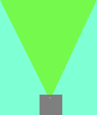

Double slit experiment är gjord för att bevisa att en elektron eller photon både fungerar som partikel och våg. Med en observator ser man två partiklar och två linjer, kolla vad som händer om man tar bort observatorn.


